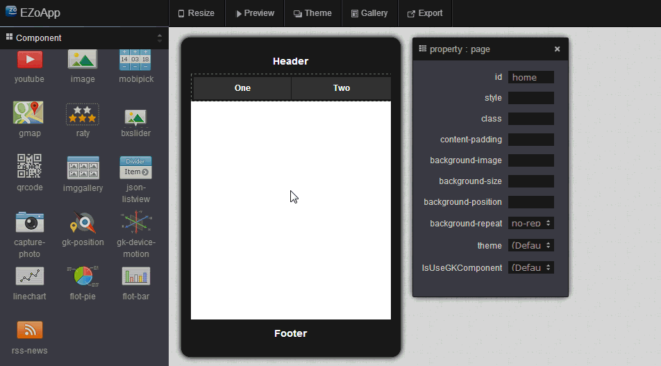
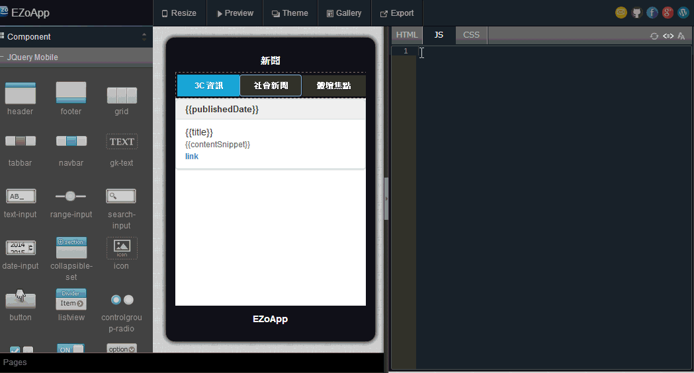

RSS 的英文全名是 Really Simple Syndication，顧名思義是個非常簡單就能整合一切資訊的服務，也是個有點像電子報或新聞群組的東西，賦予我們非常強大的編輯設計能力，並讓我們能簡單的獲取豐富的資料。
比較常見的範例就像是藉由訂閱報章雜誌的 RSS，就能夠獲得最新的文章標題與預覽內容，訂閱氣象局的 RSS 就能掌握最新的氣象資訊，訂閱名人的部落格 RSS，就能無時無刻了解名人的最新文章動態...等，諸如此類，都是 RSS 所帶給我們的便利。
過去我們在 RSS 的應用範圍，往往都是藉由 RSS 的閱讀器或是 email 的通知方式進行，更不用去談論該如何將這些非常有用的即時資訊，應用到行動裝置的平台上，而這篇範例，將會介紹如何使用 EZoApp 的 RSS 元件，最快速的產出一系列的文章清單，快速的讀取各是報章雜誌的 RSS，讓我們輕鬆做出在行動裝置平台上的 RSS 閱讀程式，
範例連結：
結合 JavaScript 應用 - RSS 服務實作

在建立文章清單之前，我們首先要建立一個基本的樣板，主要希望點選上方 header 的按鈕，下方文章清單可以載入正確的 RSS 內容。
與之前的章節所介紹的作法如出一轍，利用拖拉的方式將 header、footer、navbar 等元件放入畫面當中。
接著我們在 navbar 的程式碼內，進行以下的修改，加入相對應的 RSS 網址，就完成了基本的樣板。( RSS 元件預設為 CNN 的 RSS 網址，請自行更換相對應的網址 )
<div data-role="navbar" class="menu">
<ul>
<li apple="http://www.appledaily.com.tw/rss/newcreate/kind/rnews/type/111">
<a class="ui-btn-active ui-state-persist">3C 資訊</a>
</li>
<li apple="http://www.appledaily.com.tw/rss/newcreate/kind/rnews/type/102">
<a>社會新聞</a>
</li>
<li apple="http://www.appledaily.com.tw/rss/newcreate/kind/rnews/type/107">
<a>體壇焦點</a>
</li>
</ul>
</div>
接著我們將 EZoApp 的 RSS 元件拖拉進入畫面當中，可以看到自動產生了一個具有標題的清單畫面，而清單上許多大括號的代碼，是當我們按下 preview 的按鈕之後，會將對應的 RSS 內容放入大括號內。
針對 RSS 元件的屬性，除了可以藉由旁邊的屬性面板，進行最基本的修改，也可以直接修改程式碼編輯器中的 html 面板內的程式。
<div id="gk-428PVoA" is="rss-news" service="http://www.appledaily.com.tw/rss/newcreate/kind/rnews/type/111" rownum="3">
<!--service 請換成第一頁的 RSS 網址 -->
<!--rownum 代表產生的文章清單數量 -->
<ul data-role="listview" data-autodividers="true" data-inset="true" is="json-listview">
<li divider="{{publishedDate}}" is="listview-li">
<span>{{title}}</span>
<br>
<span style="color:#666;font-size:0.8em;white-space: normal;">{{contentSnippet}}</span>
<br>
<span style="color:#666;font-size:0.8em;white-space: normal;">
<a href="{{link}}" target="_blank">link</a>
</span>
</li>
</ul>
</div>
畫面和 HTML 都完成之後，我們只要對 JavaScript 的程式碼進行修改，就可以輕鬆的製作出一個新聞的 RSS 閱讀器囉！
$(document).on("gkComponentsReady", function () {
var $ele = $("#gk-428PVoA"),
FEED_URL = $ele.attr("service"),
$listview = $("#gk-428PVoA").find('[data-role="listview"]');
rowNum = $ele.attr('rowNum');
$('.menu li').on('click', function () {
FEED_URL = $(this).attr('apple'); //點選按鈕載入網址
fn_rss(FEED_URL);
});
fn_rss(FEED_URL); //載入 HTML 上所寫第一頁的網址
function fn_rss(FEED_URL) {
if (FEED_URL) {
$.ajax({ //利用 JQuery 的 ajax api
beforeSend: function () {
$listview.css('visibility', 'hidden');
},
url: 'http://ajax.googleapis.com/ajax/services/feed/load?v=1.0&num=' + rowNum + '&callback=?&q=' + encodeURIComponent(FEED_URL), //利用 google 的 RSS 服務
dataType: 'json',
success: function (data) {
if (data.responseData.feed && data.responseData.feed.entries) {
var models = data.responseData.feed.entries;
$listview.gk('model', models); //利用 EZoApp 的 gk 元件
$listview.css('visibility', 'visible');
}
}
});
}
}
});
因為 EZoApp 的 RSS 元件應用了 google 所提供的 RSS 服務，因此在相對應的變數名稱上就必須按照 google 解析出來的名稱規則進行 ( 也就是兩個大括號內的變數名稱 )，以下將列出幾個 google RSS 服務所提供的屬性名稱：
1.author：作者資訊
2.content：詳細內容，包含標題、內容概要與連結
3.contentSnippet：內容概要
4.link：所對應的網址超連結
5.publishedDate：發佈時間
6.title：文章標題
我們只要善用這些屬性，就能夠做出專屬於自己的 RSS 閱讀器囉！當然，因為我們可以讀取到 RSS 所提供的資訊內容，我們也可以自己將內容解析出我們要的區塊或資訊，就能夠進行更彈性的應用與變化。
範例連結：
結合 JavaScript 應用 - RSS 服務實作